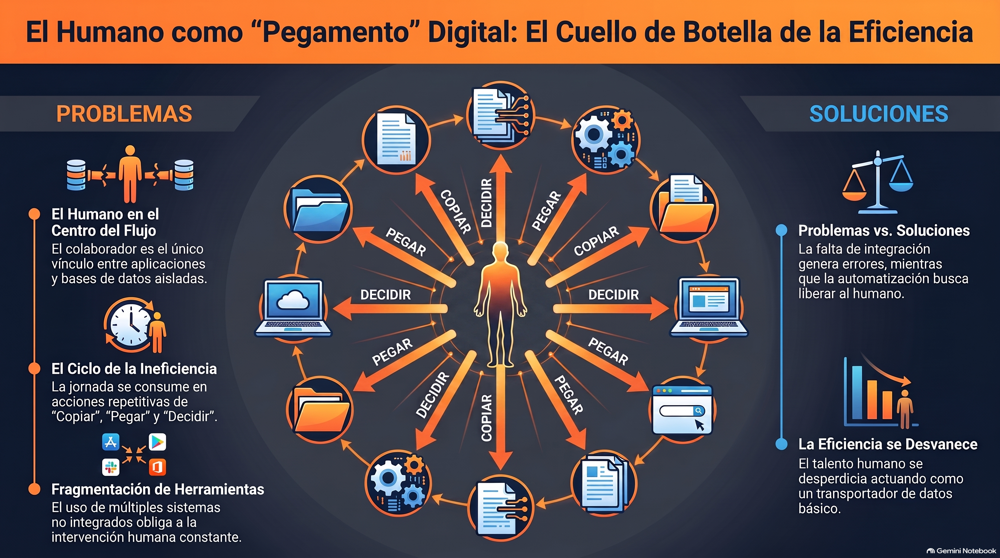
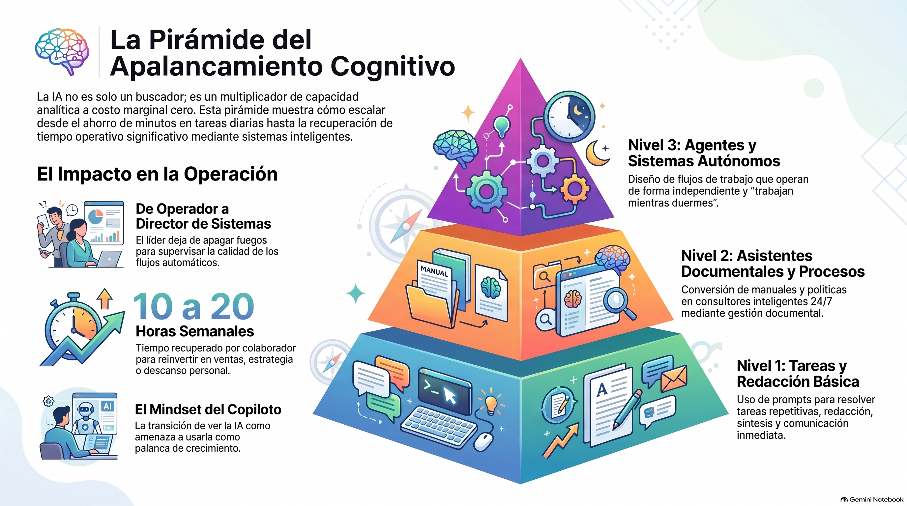
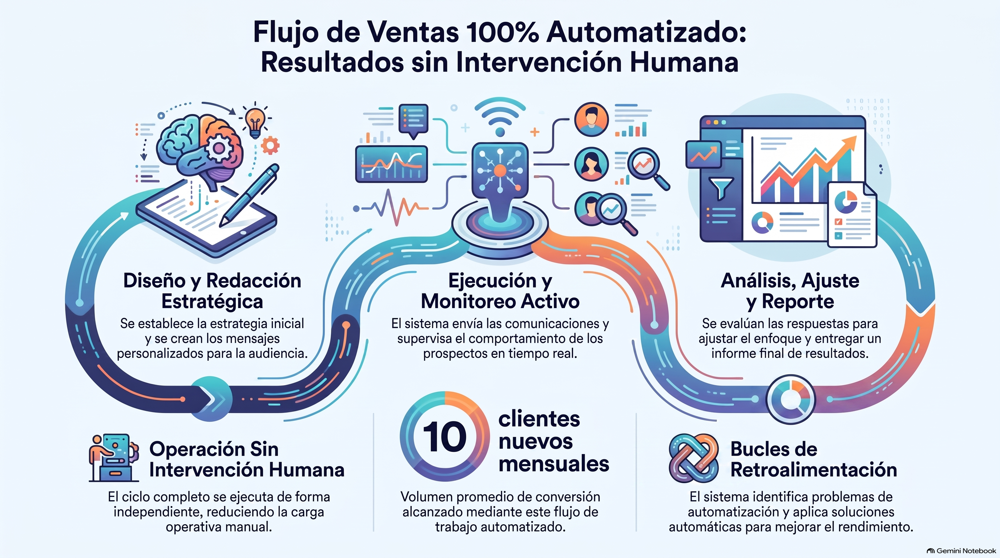
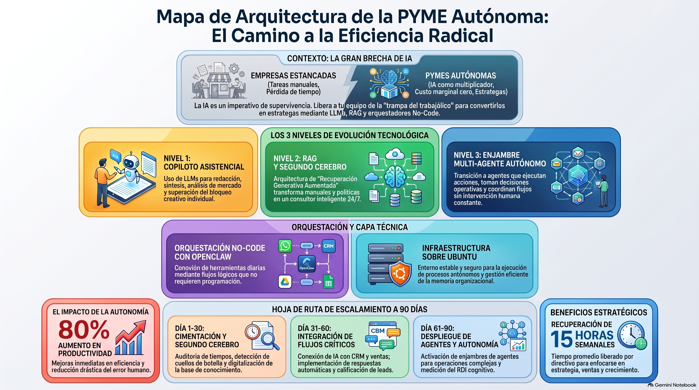
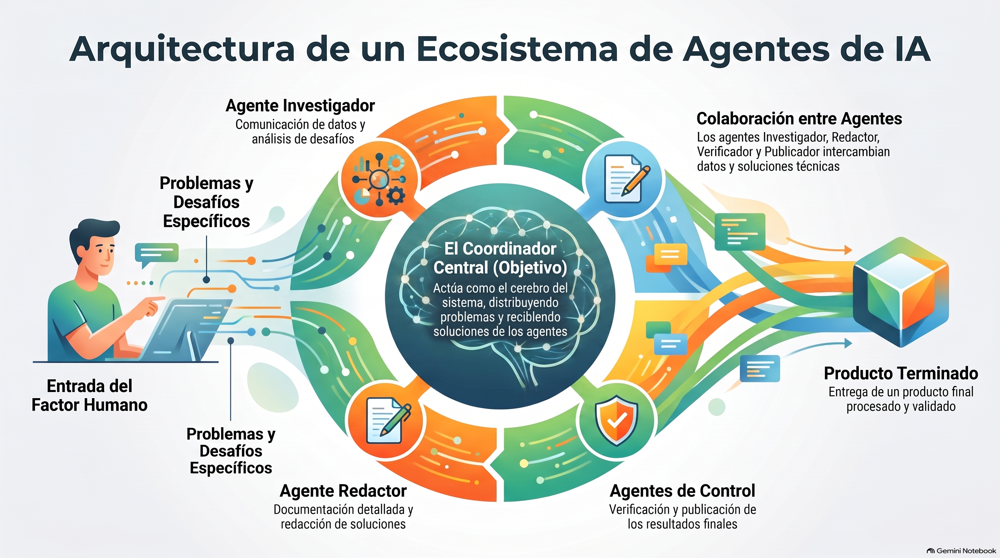
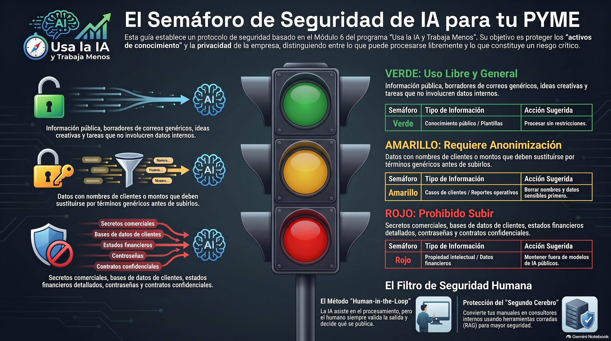
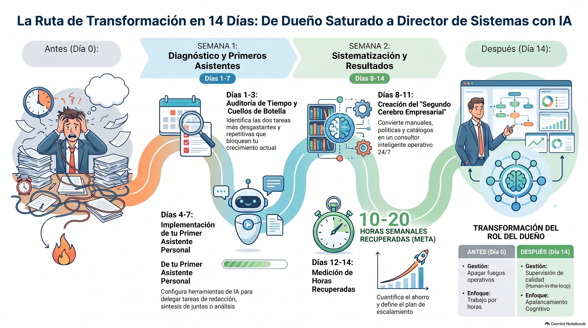
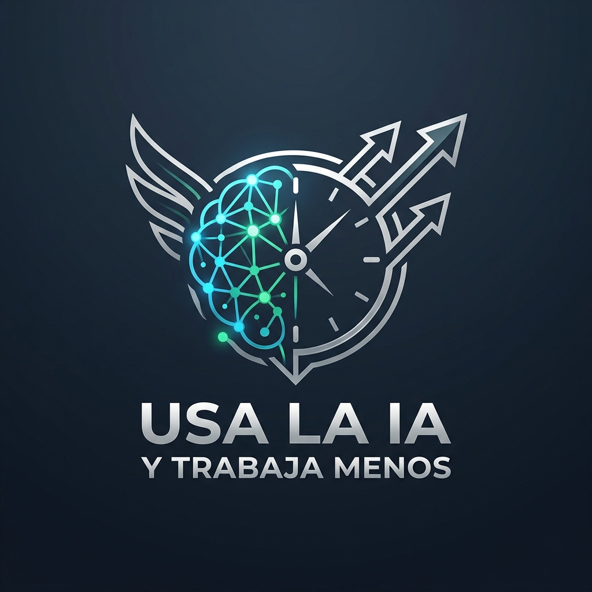

Usa la IA y Trabaja Menos
Fundamentos Científicos, Arquitectura de Procesos y Retorno Cognitivo de la Inteligencia Artificial en Pequeños y Medianos Negocios.
El Blueprint de Productividad Autónoma
Mira el resumen audiovisual de 2:28 minutos con el blueprint conceptual del libro:
Glosario Práctico de IA para la PYME: El Filtro Sin Humo
La industria del software abusa de la jerga técnica para justificar suscripciones infladas. Este glosario traduce los términos indispensables al impacto operativo y económico real en tu empresa:
El motor de razonamiento y redacción (GPT-4o, Claude 3.5 Sonnet, Gemini Flash). Procesa texto, extrae entidades y resume información a velocidad sobrehumana.
El puente seguro. Conecta el modelo a tus PDFs, manuales, catálogos y tarifas internas. Responde solo con tu verdad empresarial y evita alucinaciones.
Captura invisible de voz. Escucha una reunión comercial o llamada de soporte y genera automáticamente la minuta estructurada, acuerdos y tareas en el CRM.
Lectura visual de albaranes, fotos de inventario y tickets escaneados. Convierte una imagen física en un registro contable o pedido en ERP en 1 segundo.
Agentes con "manos". No solo responden preguntas; consultan el stock en tu base de datos SQL, generan cotizaciones y envían enlaces de pago.
Barrera de seguridad humana. La IA redacta y procesa, pero un humano aprueba con un clic antes de ejecutar acciones de alto impacto (pagos, envíos, contratos).
Estrategias de filtrado previo y modelos locales para no gastar dinero enviando gigabytes de texto irrelevante a las APIs de pago.
Reglas estrictas que impiden al agente salirse de su rol, prometer descuentos no autorizados o revelar información confidencial a terceros.
El Despertar del Emprendedor Inteligente & La Brecha del 17.7%
1. El Día en que la Operación Casi me Destruye
Eran las 2:14 AM de un martes cualquiera. Sobre mi escritorio se acumulaban tres tazas de café frío, dos hojas de cálculo con datos desencajados y una lista interminable de mensajes sin responder de clientes molestos. Sentía una opresión en el pecho que cualquier dueño de PYME reconoce de inmediato: la sensación de ser el cuello de botella de tu propio negocio.
Esa noche entendí que trabajar 14 horas al día no es una medalla de honor; es un síntoma de falla estructural. La mayoría de las pequeñas y medianas empresas no quiebran por falta de ventas, sino por el agotamiento operativo de sus fundadores.
2. La Brecha del 17.7% y la Trampa de los 44 Puntos (Datos Bancarios 2026)
El colapso operativo ocurre cuando el dueño de negocio confunde estar "ocupado" con ser productivo. Estudios bancarios y estadísticos de adopción (FactoryJet / JPMorgan Chase Institute) revelan un fenómeno crítico:
El software en la nube tradicional prometió salvarnos, pero nos convirtió en esclavos de 15 pestañas abiertas y hojas de cálculo desconectadas. El verdadero cuello de botella de la PYME moderna no es la falta de herramientas, sino que el ser humano sigue actuando como el puente manual entre sistemas que no se hablan entre sí.
"La IA dejó de esperar a que le pregunten. Ahora actúa. La generación anterior respondía preguntas (Copilot/ChatGPT); esta monitorea, planifica y ejecuta en varios pasos en su nombre. Es la diferencia entre una herramienta a la que le das instrucciones (prompting) y un colega al que le delegas un encargo."
{kind=link}

3. Copiloto vs. Esclavo de la Operación
| Eje de Análisis | El Operador Manual (Tradicional) | El Director de Sistemas (Apalancado) |
|---|---|---|
| Rol del Dueño | Resolver emergencias y redactar todo manualmente (14h/día). | Diseñar sistemas, validar borradores y tomar decisiones de alto valor. |
| Gestión de Datos | Búsqueda en carpetas, correos y chats dispersos de WhatsApp. | Base de conocimiento centralizada y privada (RAG / NotebookLM). |
| Atención a Clientes | Respuesta lenta condicionada al horario laboral y fatiga humana. | Agentes 24/7 con calificación, cotización y agendamiento autónomo. |
| Crecimiento | Lineal: cada venta adicional exige contratar más personal operativo. | Exponencial: escala la atención y el volumen a costo marginal ~cero. |
14 hrs/día • Apagando fuegos
Brecha 17.7%"] -->|Adopción Estratégica| B["👑 Director de Sistemas
Supervisión • Copilotos • Flujos 24/7
Ahorro 7.2 hrs/sem"]
Desmitificando la IA en la PYME & Pirámide del Apalancamiento
Los 3 Grandes Mitos Desmontados con Evidencia 2026
Existe una barrera invisible antes de la tecnología: la barrera de las creencias paralizantes. El 77% de los empresarios que no han adoptado IA afirman erróneamente no ver una aplicación práctica. Sin embargo, el 80% de las PYMES que la integran reporta ganancias de productividad inmediatas de al menos 20%:
El 45% de la adopción se realiza vía funciones nativas de software existente y el 67% inicia con modelos gratuitos o de bajo costo sin añadir suscripciones pesadas.
Los datos reales demuestran que el 82% de las PYMES usuarias mantuvieron o aumentaron su nómina, utilizándola como multiplicador de talento.
El 37% lo cree falsamente. Hoy el control es en lenguaje natural y plataformas No-Code. El requisito no es programar, sino saber explicar con claridad los procesos del negocio.
Niveles de Madurez y Apalancamiento Cognitivo
| Nivel de Apalancamiento | Rol del Usuario | Herramientas Tipo | Ahorro de Tiempo / Impacto |
|---|---|---|---|
| Nivel 1: Tareas Básicas | Operador de Prompts | ChatGPT, Claude, Gemini | 2 - 3 hrs/semana (Borradores, síntesis) |
| Nivel 2: Asistentes Documentales | Arquitecto de Procesos | NotebookLM, Deelo, Glide | 5 - 8 hrs/semana (Cero Alucinación, RAG) |
| Nivel 3: Sistemas Autónomos | Director de Sistemas | Make, n8n, Gorgias, Klaviyo | 10 - 15 hrs/semana (Escalamiento 24/7) |
Matriz de Autodiagnóstico: Los 4 Ladrones de Tiempo Operativo
No puedes automatizar lo que no has medido. Los 4 grandes ladrones de tiempo son: 1) El síndrome de la bandeja de entrada, 2) Reuniones sin minuta, 3) Transcripción manual de datos, y 4) Búsqueda de información perdida:
| Actividad Diaria | Frecuencia | Tiempo Invertido | Naturaleza de la Tarea | Nivel IA Aplicable |
|---|---|---|---|---|
| Responder dudas frecuentes por WhatsApp | Diaria | 8 horas / sem | Mecánica (mismas dudas repetitivas) | Nivel 3 (Agente WhatsApp) |
| Redactar cotizaciones de servicios y propuestas | 3x / semana | 6 horas / sem | Híbrida (plantilla base + ajuste específico) | Nivel 2 (Base RAG) |
| Resumir acuerdos y minutas de reuniones | 2x / semana | 3 horas / sem | Mecánica (transcripción y síntesis) | Nivel 1 (Asistente Audio) |
| Conciliación y búsqueda de facturas / pólizas | Semanal | 5 horas / sem | Mecánica (cotejo de campos y montos) | Nivel 2 (OCR + RAG) |
Fórmula Científica V2: Un equipo de 10 colaboradores que recupera 6.5 h/semana libera 260 h/mes. A $20 USD/h = $5,200 USD/mes. Un equipo de 5 que recupera 10 h/sem a $25/h ahorra $5,412.50 USD/mes:
{kind=link}

Lead, WhatsApp, llamada, fotos y datos
Archivo completo, NIF/RFC, stock y viable
Cotización técnica y condiciones comerciales
Criterio comercial y técnico (HITL)
Ingreso a ERP, logística y despacho
Métricas, facturación, cobro y mejora
El Arte de Comunicarse con la IA: Framework R.C.E.F., Few-Shot & Marco A.G.E.N.T.
La diferencia entre una respuesta vaga de la IA y un entregable listo para producción radica en la estructura de la instrucción. El Framework R.C.E.F. y la técnica Few-Shot (dar ejemplos de entrada/salida) estandarizan la comunicación corporativa con cualquier modelo LLM:
Define la identidad, experiencia y perspectiva profesional.
Antecedentes del negocio, cliente, montos y situación exacta.
La tarea específica y paso a paso a realizar.
Estructura de salida (tabla, markdown, viñetas, tono).
Plantilla Maestra R.C.E.F. para Cobranza y Atención B2B
Plantilla Few-Shot: Calificación Instantánea de Leads
Metodología A.G.E.N.T. de Harvard Data Science Initiative
Para evolucionar de simples prompts aislados a sistemas con impacto empresarial real, la Harvard Data Science Initiative (HDSI) propone el marco de 5 fases A.G.E.N.T.:
Auditar la tarea: Medir el tiempo base, cuello de botella, datos de entrada y dependencias humanas actuales.
Calibrar el objetivo: Definir criterios de éxito cuantitativos (ej. tiempo de respuesta < 2 min, 0 errores en montos).
Ingeniería del agente: Diseñar micro-pasos deterministas, memoria contextual, herramientas (APIs) y JSON Schemas.
Gobernanza y HITL: Establecer barandales (Guardrails), semáforo de privacidad y puntos de aprobación humana.
Telemetría y ROI: Monitorear costo por ejecución ($/token), tasa de acierto, latencia y horas ahorradas por semana.
El Kit Esencial de Herramientas & NotebookLM (RAG Privado)
NotebookLM representa el estándar de oro para la gestión documental privada en la PYME. Al operar bajo la arquitectura RAG (Retrieval-Augmented Generation), garantiza cero alucinaciones y cero fugas de datos, respondiendo exclusivamente con base en los manuales, catálogos y políticas subidas por el usuario, e incluyendo citas directas comprobables en menos de 10 segundos.
Ecosistema de Software Vertical Especializado (2026)
| Categoría / Sector | Herramienta Destacada | Caso de Uso PYME | Impacto Medido (Fuentes 2026) |
|---|---|---|---|
| Gestión Documental | NotebookLM | Segundo cerebro con RAG privado sobre PDFs, contratos y notas. | Reducción del 90% en interrupciones al dueño. |
| Construcción / Campo | ShareMyToolbox | Control QR/GPS de herramientas y asignación de equipo a técnicos. | Cero pérdidas de activos en obra ($14k USD ahorrados). |
| Inmobiliaria / PropTech | Deelo + Restb.ai | CRM unificado con visión por computadora para clasificar fotos de propiedades. | Respuesta a leads en <2 minutos; +28% ventas. |
| Manufactura / Stock | Glide | Apps No-Code conectadas en tiempo real a Google Sheets / SQL. | Automatización de alertas de inventario y pedidos. |
| E-commerce | Gorgias + Klaviyo | Soporte automatizado de pedidos (WISMO) e email marketing con IA. | +31% mayor conversión en ventas recuperadas. |
Casos de Uso Reales por Departamento (La Trinchera Operativa)
La fuerza laboral digital opera en la trinchera diaria de las PYMES resolviendo cuellos de botella específicos con retornos económicos directos:
{kind=link}

Casos de Estudio Hiperrealistas: Antes vs. Después
| Sector / Departamento | Antes de la IA (Dolor) | Intervención con IA / OpenClaw | Resultado Tangible |
|---|---|---|---|
| Bienes Raíces / PropTech | Pérdida del 40% de leads por demora en respuesta fuera de horario. | Deelo + Restb.ai + Twilio (Agente 24/7 con visión para planos/fotos). | Cita agendada en 3 minutos; +28% en ventas cerradas. |
| E-commerce | Cola de 180 tickets de soporte acumulados por estado de envíos. | Gorgias + Klaviyo + Shopify (Atención automática WISMO). | Cola reducida a <12 tickets; resueltos en 15 segundos. |
| Taller / Manufactura | Pérdida recurrente de herramientas y activos en campo. | ShareMyToolbox con escaneo QR y alertas preventivas. | Cero extravíos; $14,000 USD ahorrados al año. |
| Consultoría / Servicios | 15 horas/semana redactando informes y minutas manualmente. | NotebookLM + Framework R.C.E.F. + Plantillas Few-Shot. | Informes listos en 20 minutos; +35% margen operativo. |
| Finanzas & Contabilidad | Errores en captura manual de facturas y cotejo de pólizas. | Extracción IDP/OCR + Reconciliación automatizada en Make. | -90% en errores de captura; conciliación en 5 minutos. |
De la Asistencia a la Automatización No-Code (Cotizador Autónomo)
Conectar herramientas aisladas mediante plataformas No-Code como Make, Zapier, n8n o ManyChat permite construir procesos comerciales autónomos de extremo a extremo.
1. Captura de Intención: ManyChat recibe el mensaje del prospecto y recopila requerimientos.
2. Bucle de Reactivación de 23 Horas: Si el usuario interrumpe la conversación, el bot envía un recordatorio automático antes de cerrar la ventana de mensajería.
3. Consulta en ERP: Make consulta el inventario y listas de precios en tiempo real.
4. Generación y Envío: Genera un PDF formal membretado y lo entrega en el chat de WhatsApp en menos de 3 minutos.
{kind=link}

Explora la arquitectura técnica en tiempo real generada con la skill Archify: interactúa con las 3 vistas especializadas (Flujo Completo, Inferencia Local $0/token y Enjambre Agéntico), navega con zoom/pan dinámico y examina cada nodo del ecosistema.
Chatbot Tradicional vs. Agente Autónomo
| Característica | Chatbot Tradicional (Pasivo) | Agente Autónomo (Activo / OpenClaw) |
|---|---|---|
| Modo de Operación | Reactivo: Solo responde cuando el usuario escribe una frase exacta. | Proactivo: Se activa por eventos (webhooks, horarios, correos, alertas). |
| Acceso a Herramientas | Limitado a su ventana de chat sin integración externa. | Lee/escribe en CRMs, emite facturas, consulta ERPs y bases SQL. |
| Manejo de Errores | Se detiene o emite mensajes genéricos de fallo. | Autocorrección con reintentos y alertas a supervisión humana (HITL). |
{kind=link}

Seguridad, Privacidad y Capacitación Humana (2.3x ROI)
El 38% de los empresarios teme a la IA por riesgos de seguridad y privacidad. Para operar con certeza absoluta se aplica el Semáforo de Privacidad combinado con formación continua del equipo:
{kind=link}

Artículos públicos, copys de marketing, lluvia de ideas y dudas conceptuales generales.
Cotizaciones y minutas retirando nombres de clientes, teléfonos y montos confidenciales.
Contraseñas, claves bancarias, secretos industriales y código fuente propietario (exclusivo para RAGs locales u offline).
Estudios de adopción demuestran que las empresas que invierten en formar activamente a su personal en prompts y flujos de trabajo con IA obtienen un retorno de productividad 2.3 veces mayor que las que simplemente compran licencias de software sin entrenamiento. La herramienta es tan potente como la habilidad del operador que la dirige.
Ciberseguridad Aumentada: El Escudo de la PYME
Filtrado avanzado de correos fraudulentos mediante análisis de intenciones y anomalías en encabezados.
Enmascaramiento regex y NER antes de transmitir cualquier variable sensible a APIs comerciales.
El Plan de Acción en 14 Días & Hoja de Ruta Táctica
Sigue la hoja de ruta visual para desplegar tu primer sistema de productividad apalancada sin interrumpir las operaciones en curso:
{kind=link}

Cronograma Táctico de Implementación (14 Días)
| Día / Fase | Objetivo Clave | Acción Específica | Entregable Esperado |
|---|---|---|---|
| Días 1 - 3 | Auditoría de Tiempo | Identificar las 3 tareas más repetitivas y cuellos de botella del equipo. | Matriz de diagnóstico de Retorno Cognitivo lista. |
| Días 4 - 7 | Segundo Cerebro | Crear la primera libreta en NotebookLM con SOPs, manuales y tarifarios. | RAG documental privado operativo con 0% alucinación. |
| Días 8 - 11 | Primer Flujo No-Code | Conectar WhatsApp/CRM con ManyChat o Make para cotizador/triaje. | Cotizador o calificador automático funcionando 24/7. |
| Días 12 - 14 | Capacitación & HITL | Entrenar al equipo en R.C.E.F. y fijar reglas Human-in-the-Loop. | Sistema autónomo con 10h/sem ahorradas por persona. |
Marca las casillas conforme vayas completando la implementación en tu empresa (tu progreso se guarda automáticamente):
Conclusiones del Libro 1: El Protocolo de las 4 Fases
Has recorrido los fundamentos, los frameworks de prompt engineering y las arquitecturas de apalancamiento cognitivo. Para que esta lectura se convierta en caja, margen y tiempo libre real, la regla de oro que separa a las PYMES exitosas del 77% que se estanca es el Protocolo de las 4 Fases Secuenciales:
Mapear el proceso en papel antes de tocar cualquier software. Identificar con precisión el cuello de botella, el volumen de repetición y las excepciones.
Lanzar un piloto acotado de 8 a 12 semanas con un único caso de uso específico (ej: cotizaciones) y usuarios reales bajo supervisión.
Auditar las horas netas recuperadas, la tasa de error evitada, la satisfacción del cliente y el consumo real de tokens/suscripciones.
Solo cuando el ROI esté plenamente probado, expandir la automatización al resto del equipo e iniciar el siguiente departamento.
Masterclass en Audio & Conversación Estratégica (17 min)
Para aquellos momentos donde prefieres aprender mientras manejas, haces ejercicio o mientras navegas por los capítulos anteriores, hemos condensado los aprendizajes clave del libro en esta Masterclass en Audio de Alta Fidelidad.

💡 3 Grandes Conclusiones de la Sesión
- La IA es un amplificador de sistemas, no un sustituto de procesos: Si automatizas el caos, obtendrás caos a alta velocidad. Primero estandariza, luego delega al modelo.
- El valor está en la privacidad de tus datos (RAG): Los modelos públicos conocen el mundo, pero solo tu libreta privada de NotebookLM conoce tus políticas, márgenes y excepciones.
- Tu objetivo es la semana laboral apalancada: No busques que la IA resuelva el 100% de tu vida el primer día; basta con recuperar 2 horas diarias de tareas mecánicas para transformar tu rentabilidad.
Quiz de Certificación & Flashcards de Repaso
Repasa los conceptos clave del libro con las Tarjetas 3D de Estudio Rápido. Cuando estés listo, responde la evaluación de 5 preguntas (requiere 80% de aciertos) para obtener tu Certificado Oficial y desbloquear el acceso al Libro 2: PYMES Autónomas.
🎴 Flashcards de Repaso Rápido (Haz clic en cada tarjeta para girarla)
[R]ol + [C]ontexto + [E]jecución + [F]ormato y Límites.
Solo responde con base en tus manuales indexados, citando fuentes exactas.
Contraseñas, claves bancarias, secretos comerciales y PII no anonimizada.
El agente ejecuta acciones multi-paso en herramientas externas (APIs, CRM, facturas).
📝 Evaluación de Certificación (5 Preguntas)
Has demostrado dominar los fundamentos de apalancamiento cognitivo, RAG y automatización. Ahora tienes acceso desbloqueado a la aplicación web interactiva del Libro 2: PYMES Autónomas (Nivel Enterprise).
🚀 Abrir Libro 2: PYMES Autónomas (Web App Interactiva)PYMES Autónomas: Escalamiento con Agentes Multi-Modelo, RAG Avanzado y Linux
Has dominado los fundamentos de productividad del Libro 1. El Libro 2 lleva a tu empresa a la vanguardia de la ingeniería agéntica moderna: agentes con capacidad de razonamiento ReAct, GraphRAG con bases vectoriales, orquestación local con costo cero por token y un plan de transformación a 90 días.
Aplicación Web Interactiva del Libro 2
Explora los 8 módulos avanzados con diagramas dinámicos, código bash, JSON Schemas y reproductor de audio dedicado.
Temario Ejecutivo del Libro 2
El ciclo cognitivo ReAct (Reasoning + Acting) y los 5 niveles de autonomía agéntica en negocios.
Arquitectura en enjambre (Swarm): Agentes de Entrada, Calificación, Cotización y Facturación.
Grafos de conocimiento empresarial, embeddings híbridos y recuperación semántica de alta fidelidad.
Despliegue de Llama 3 / DeepSeek / Mistral en servidores locales Linux/Ubuntu con Ollama y vLLM.
Redis para memoria volátil de corto plazo, PostgreSQL + pgvector para persistencia y colas asíncronas.
Conexión bidireccional en tiempo real con WhatsApp Cloud API, Slack, Notion, Hubspot y Stripe.
Monitoreo de latencia y costo de inferencia, auditoría de fallas y mecanismos Fail-Safe con intervención humana.
Roadmap de 3 meses estructurado en sprints de 30 días para transformar cualquier PYME en una máquina autónoma.
📥 Descargar Libro 2 & Presentación Ejecutiva
Archivos oficiales de arquitectura para ingeniería y dirección general.